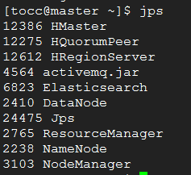
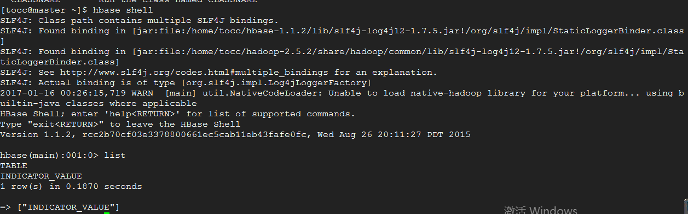
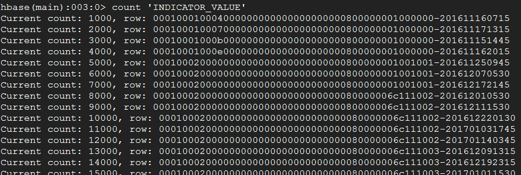

来写写如何手动迁移hbase的数据
文章目录
导语：hbase数据迁移有多种方式，有静态的动态的，网上一堆。下面我说说上周实际使用import和export方式的过程。
介绍
HDFS是hadoop的分布式文件系统，hbase的数据存放在该文件系统内，”/“是相对的根目录。
hadoop对HDFS在命令行下可以做一些常用的操作，如cat、ls、mkdir、rm等，命令格式如下:
1 | shell>bin/hadoop fs <args> |
对于本文档，需要了解几个hadoop的命令行：
1 | shell>bin/hadoop fs -mkdir #新建文件夹 |
对于hbase数据的导出，我们需要了解下hbase提供的导入导出的工具。org.apache.hadoop.hbase.mapreduce.Driver 是hadoop jar的一个驱动类，给我提供了导入，导出，复制部分或全部表，计算表行数等功能。我们需要使用如下两个hbase shell：
1 | shell> bin/hbase org.apache.hadoop.hbase.mapreduce.Export <tablename> <outputdir> |
流程开始：
源集群
在源集群master上，执行如下操作：
首先检查hbase是否正常jps；如图

关闭公司产品服务，使hbase的数据在迁移的过程中不被操作。
在HDFS上新过渡的数据存放路径
1 | shell>bin/hadoop fs -mkdir /db/ |
导出hbase表到过渡路径，indval20170116为文件名。
1 | shell>hbase org.apache.hadoop.hbase.mapreduce.Driver export INDICATOR_VALUE /db/indval20170116 |
复制数据到操作系统本地文件系统
1 | shell>hadoop fs -copyToLocal /db/indval20170116 /home/tocc/indval20170116 |
传数据到目标集群的机器上。可利用sftp，scp。
目标集群
在目标集群master上，执行如下操作：
如使用压缩命令，则解压缩
1 | tar -zxvf indval20170116.tar.gz |
建立数据过渡路径
1 | shell>bin/hadoop fs -mkdir /db/ |
将数据文件导入到HDFS
1 | hadoop fs -copyFromLocal /home/XXXX/indval20170116 /db/indval20170116 |
建立hbase数据表
1 | shell>hbase shell |
将数据文件导入表
1 | shell>hbase org.apache.hadoop.hbase.mapreduce.Driver import INDICATOR_VALUE /db/indval20170116 |
最后到hbase shell里面验证下数据数据是否导入成功。

统计habse行数：

到此，数据迁移完成，查看指标数据是否正常。
本文标题：来写写如何手动迁移hbase的数据
文章作者：bellpost
发布时间：2020-07-16
最后更新：2020-07-16
原始链接：https://bellpost@github.io/2020/07/16/migrating-hbase-data/
版权声明：本博客所有文章除特别声明外，均采用 CC BY-NC-SA 3.0 CN 许可协议。转载请注明出处！